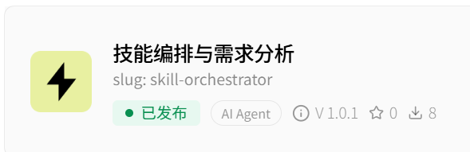

skill-orchestrator
AI Agent 技能 · 已发布 skillhub.cn
零第三方依赖的 Agent 技能：探测本地技能库、建档索引、按需匹配。 机械操作全部下沉到脚本，模型只读一行状态串；技能库内容一律视为不可信输入。 省 token 只是表象，真正的好处是行为可预测。
查看源码 →PORTFOLIO / 2026
Desktop AI Coach · 运行在桌面最上层的悬浮助手
AI · 拖拽失败前，Console 已经出现编译错误。
AI · 请点击最上方的红色错误。
AI · 当前步骤 1/4
用户遇到问题直接提问，系统从本地滚动缓存里取出提问前后的屏幕过程， 理解他正在做什么，然后把目标标在真实桌面上，用虚拟鼠标演示一遍。 用户自己动手，AI 看新画面确认结果再给下一步。
大学讲座智能平台 · 三端角色 · Spring Boot 3 + Vue 3
市面上不少「AI 助手」还是关键词匹配拼提示词——看起来智能，其实一步都不会自己走。 TalkWise 里换成真 Agent：模型自主决定调用哪个工具、按什么顺序调，代码退到后面，只提供工具集与循环。

AI Agent 技能 · 已发布 skillhub.cn
零第三方依赖的 Agent 技能：探测本地技能库、建档索引、按需匹配。 机械操作全部下沉到脚本，模型只读一行状态串；技能库内容一律视为不可信输入。 省 token 只是表象，真正的好处是行为可预测。
查看源码 →github.com/shengqizhe
在 GitHub 上查看全部仓库、提交记录与技术文档。
打开 GitHub →